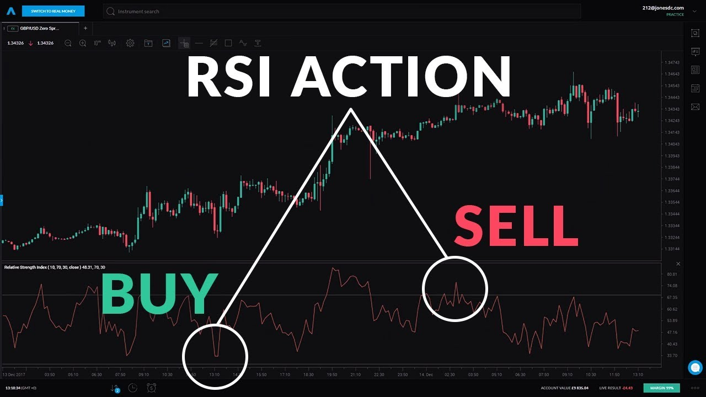

What is the Relative Strength Index (RSI) in stock/crypto trading?
As the craze of investing in stocks and crypto trading increases day by day, it's important to
know the technical aspects of it. If you ignore the technical aspects, you are more likely to
lose money in the long run. It doesn't matter if you are a beginner or have been trading for
years, you need to be aware of the technical indicators.
Now when it comes to technical aspects of training, it's hard to ignore one of the most
popular technical indicators is the Relative Strength Index (RSI). Whenever you hear about
someone using technical analysis to make trading decisions, the chances are that they are
referring to the RSI. The Relative Strength Index or RSI is a momentum indicator that
measures the magnitude of recent price changes to evaluate overbought or oversold
conditions in the price of a stock or other asset.
Understanding how RSI works will help you make better trading decisions and improve your
overall investment strategy. Even crypto traders can benefit from using RSI. In this article,
we will be discussing what RSI is, how to calculate it, and how you can use it in your trading.
So if you are interested in learning more about the RSI, then continue reading.
What is the Relative Strength Index (RSI)?
The Relative Strength Index (RSI) is a momentum indicator and it helps to measure the
magnitude of recent price changes, which leads to evaluate overbought or oversold
conditions in the price of a stock or other asset. The RSI is displayed as an oscillator and
ranges from 0 to 100. Traditional interpretation and usage of the RSI are that values below
30 represent oversold conditions and values above 70 represent overbought conditions.
In simple words, RSI is a technical analysis indicator that measures the speed and change
of price movements. The RSI oscillates between 0 and 100. The main features of the RSI
are the overbought area above 70 and the oversold area below 30. When the stock is
overbought, it means that it is expensive, and when it is oversold, it means that it is cheap.
The RSI was developed by J. Welles Wilder and first presented in his book "New Concepts
in Technical Trading Systems" in 1978. The Relative Strength Index formula uses a
particular time frame.
The RSI is calculated using a formula that measures the magnitude of recent gains and
losses over a specific period to evaluate overbought or oversold conditions in the price of a
stock or cryptocurrencies.
The RSI oscillates between 0 and 100. The typical time frame for the RSI is 14 days, but it
can be adapted to other time frames as well. The most important thing is to be consistent
with the time frame you use.
In a bull market, the RSI is generally in the 40 to 90 range, with the 40-50 zone serving as
support. The RSI is most often found between 10 and 60 during a market downturn or bear
market, with 50-60 serving as resistance.
Your stops will change dynamically as conditions shift, and they won't be static unless you
use a programmatic stop-loss. Stops will differ based on the RSI settings and the strength of
the security's or market's underlying trend.
The use of RSI in cryptocurrencies
Similar to stocks, cryptocurrency prices also fluctuate even more. And just like stocks, there
are momentum indicators for cryptocurrencies that help to measure the speed and change of
price movements. And the RSI is one of the most popular momentum indicators when it
comes to cryptocurrencies as well.
The main difference between the stock market and the cryptocurrency market is that the
crypto markets are open 24/7, 365 days a year. This means that there are always
opportunities to trade, regardless of what time it is. The RSI can be used on any
cryptocurrency, but it is recommended to use it on the major ones such as Bitcoin,
Ethereum, Litecoin, etc. Only because these cryptos are the most traded and have some
sort of stability.

Why is RSI important for stock/crypto trading?
There are so many reasons why RSI is important. But the main reason is that it helps to
identify market conditions
1. Interpretation
When it comes to stock and especially crypto trading, timing is everything. You need to buy
assets when the prices are low and sell those assets when the prices are high. And this is
where RSI comes in handy. It helps to identify overbought and oversold conditions, so you
know when to buy or sell. When Wilder initially expressed his RSI, he suggested 14 days.
This time frame is still used by many traders today, but some use shorter or longer time
frames depending on their trading style
2. Momentum
RSI is all about the momentum of assets. This means that it measures the speed and
change of price movements. It's extremely important because it helps to understand what
will be the ideal time to enter or exit a trade. Without this information, you might end up
buying when the prices are high or selling when they are low. When it comes to cryptos, it
becomes even more important because cryptocurrencies fluctuate a lot.
3. Shows trading signals
Another key reason why RSI is important is that it can show trading signals. These signals
are not always accurate but they give you a general idea about what's happening in the
market. And this is extremely useful, especially for beginner traders who don't have a lot of
experience.
4. Pattern breakout
We know that the formation of patterns is a fascinating aspect of chart building. A breakout
occurs when any pattern, whether it's a reversal or continuation, reaches a specific point in
time. This means that the prices have moved outside of a defined range. The RSI is a
momentum indicator that evaluates the stock's relative strength over some time. This means
that it can help to identify potential breakouts.
5. Failure indications
When it comes to trading stocks and cryptos, at some point you will face failures and this is
completely normal because no one is perfect. But the good thing is that RSI can help to
identify these failures. For example, if you see that the prices are consistently falling while
the RSI is rising, this might be a sign that the prices will reverse soon. So you can use this
information to your advantage and exit the trade before it's too late.
How do I calculate RSI?
Calculating RSI is not that hard but if you are a beginner, you might struggle at the
beginning. Here is the formula for Relative Strength Index or RSI:
RSI = 100 – [100 / ( 1 + (Average of Upward Price Change / Average of Downward Price
Change ) ) ]
The most commonly used time frame for RSI is 14 days, but other periods can be used as
well such as 9 or 25.
Do I have to calculate RSI manually?
No, you don't! You don't have to calculate RSI manually because there are online tools that
can make your job easier. All you have to do is enter the ticker symbol of the stock or
cryptocurrency and the time frame that you want to use. And the tool will do the rest for you.
Best RSI calculator
Now when it comes to RSI calculators, we can't ignoreScreener.plus Screener.plus is used
by many professional traders because it's accurate, user-friendly, and has competitive
pricing. Whether it is stock or crypto trading, Screener.plus can handle them all! Here are
some of the key features of Screener.plus that you might want to check out:
1. User-friendly: RSI can be a complicated indicator if you don't have any experience with
it. But Screener.plus makes it easy for you by providing a user-friendly interface. Every piece
of information is displayed clearly and concisely, so you can understand it without any
problem.
2. Accurate: Screener.plus uses the most accurate data sources to give you the best
results. This is extremely important because if the data is not accurate, your whole trading
strategy could be ruined.
3. Affordable: Another great thing about Screener.plus is that it's very affordable. There are
different pricing plans to choose from, so you can pick the one that suits your needs and
budget.
4. Cryptocurrency support: Unlike other platforms, Screener.plus also supports
cryptocurrencies. Not just that, but you can also get detailed information about each crypto,
such as the price, market cap, 24-hour volume, etc.
5. Access to enterprise-grade financial data: Having access to high-quality data is the key
to success in stock or crypto trading. And Screener.plus gives you just that! With its
enterprise-grade financial data, you can make informed decisions and stay ahead of the
game.
These are just some of the few reasons why Screener.plus is the best RSI calculator out
there. So if you're looking for a platform, you can check out Screener.plus!
Final thoughts
So there you have it! This is everything that you need to know about the Relative Strength
Index or RSI. As you can tell by now, RSI is a very helpful indicator and it can be used in
different ways to improve your trading strategies. But remember, RSI is just an indicator and
it should not be used alone to make trading decisions. It should be used in conjunction with
other indicators and tools.